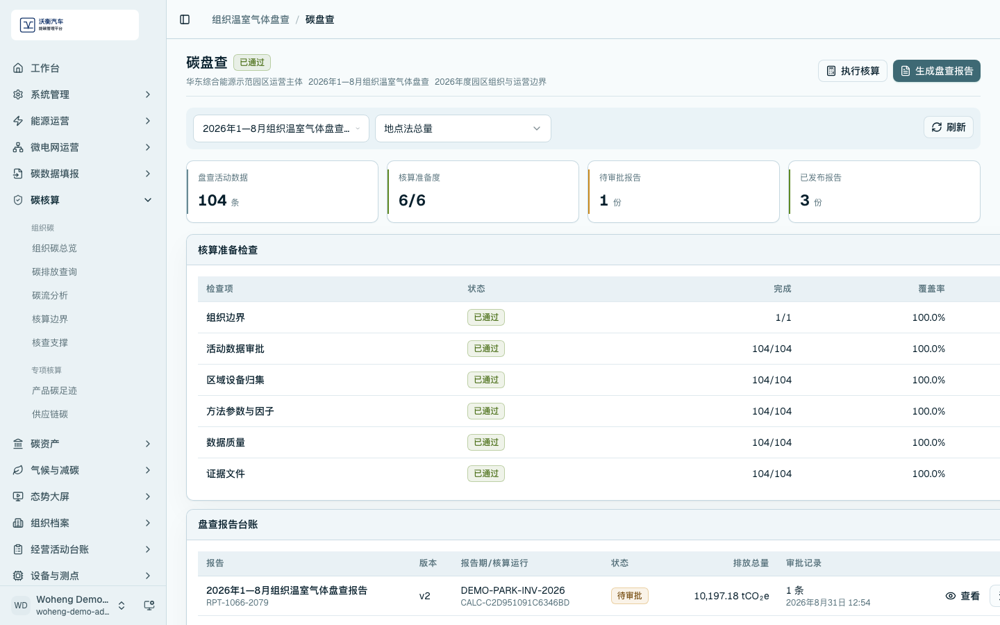
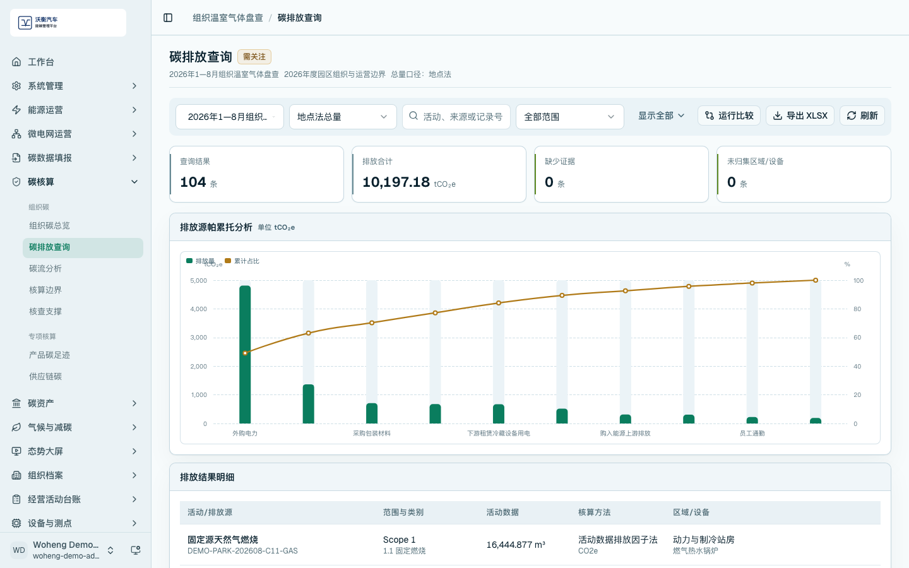
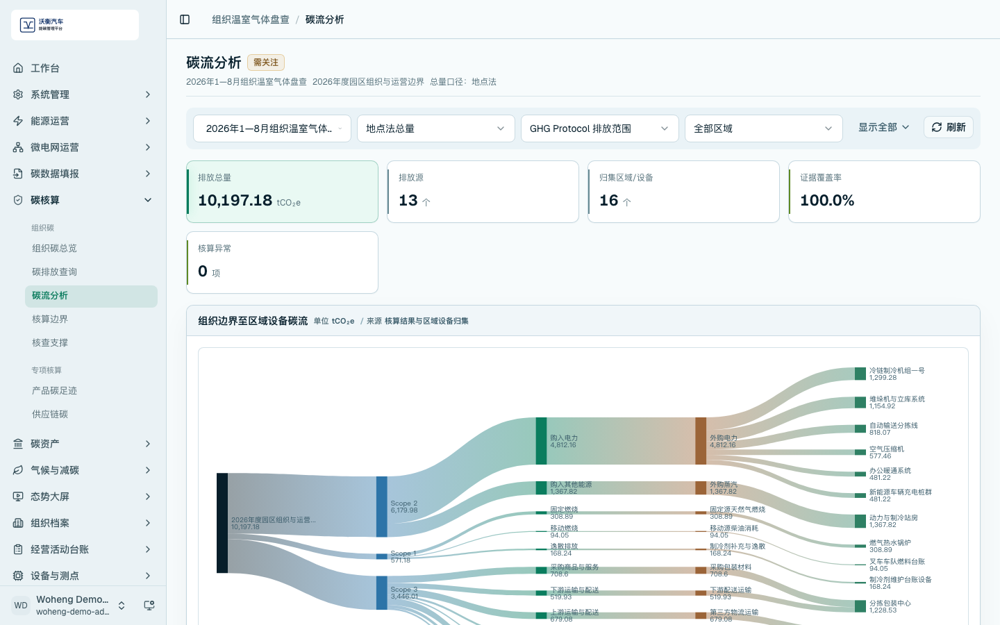
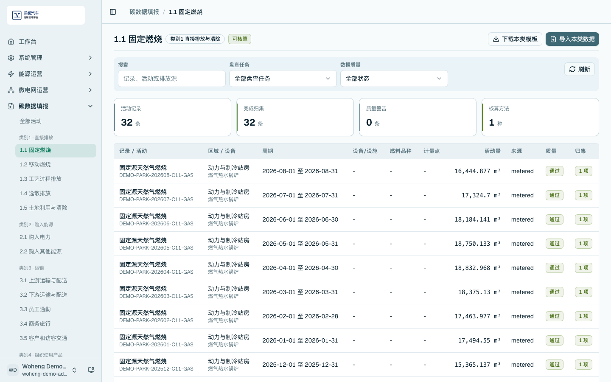
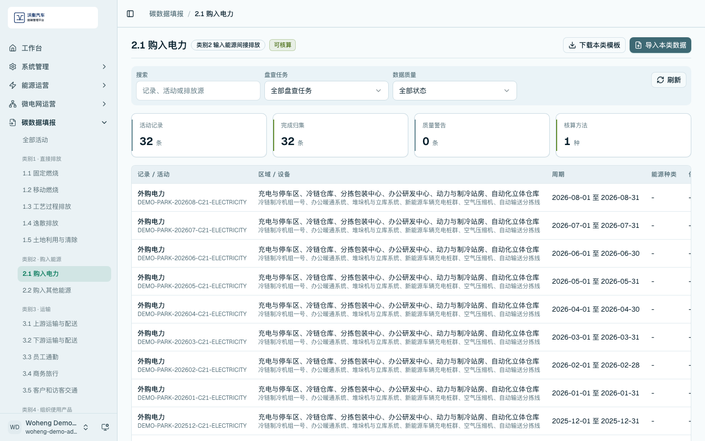
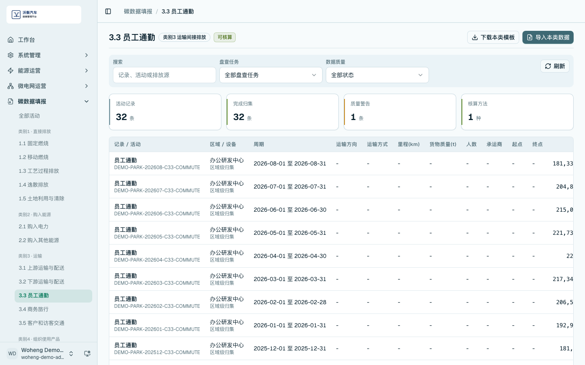
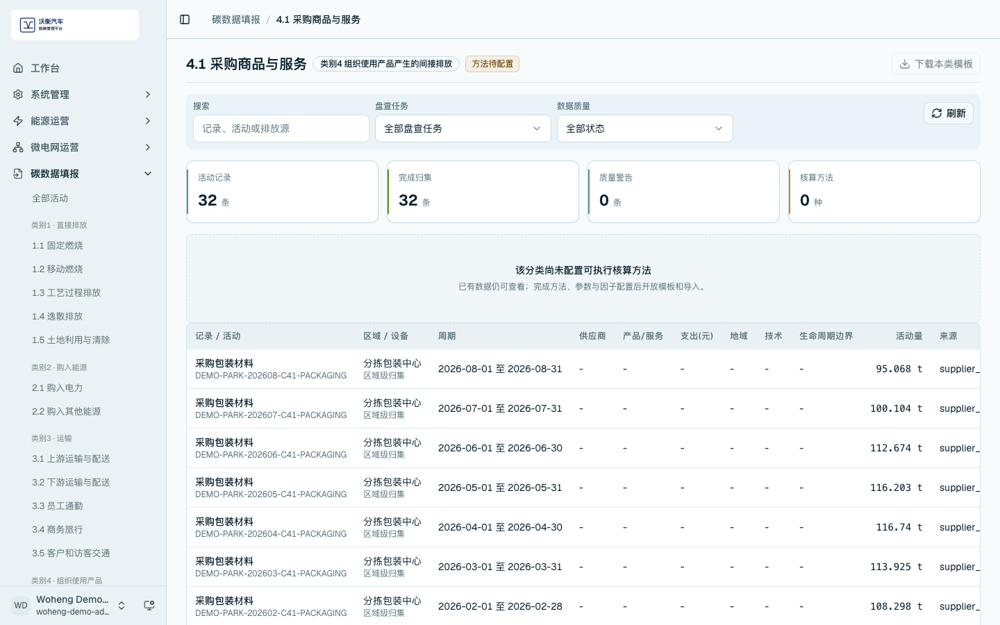
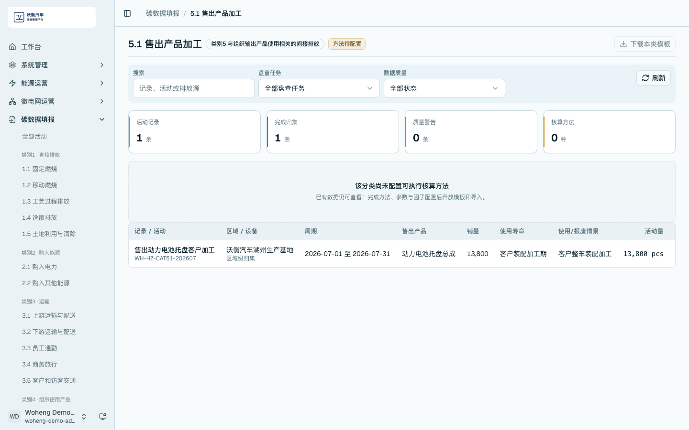
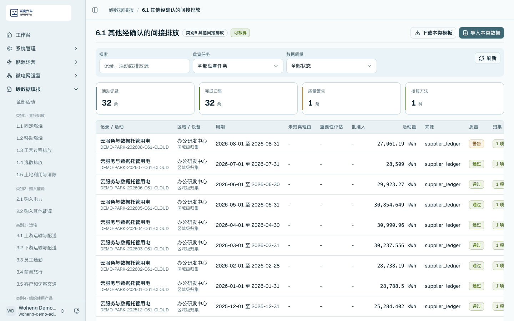

组织碳管理与 ISO 14064 分类
组织碳管理模块用于建立组织边界、核算边界、活动数据、排放因子、核算结果、报告和核查支撑。平台按组织温室气体盘查逻辑组织数据，并与产品碳足迹、供应链碳管理共同支撑企业多层级能碳管理。
组织碳总览
进入 /carbon/organization/overview，查看 Scope 1、Scope 2、Scope 3、报告期排放趋势和排放构成。

组织边界与核算边界
进入 /carbon/organization/boundary，查看组织边界、运营控制法、区域设备边界和 ISO 14064-1 六类别覆盖。该页面用于说明哪些组织、区域、设备和排放活动纳入当前盘查口径。

排放清单与报告台账
进入 /carbon/organization/inventory，查看核算准备检查、盘查报告台账、报告版本和状态。

排放结果明细
进入 /carbon/organization/records，查看排放结果明细、排放源帕累托分析和核算公式。打开明细后可核对活动数据、参数因子、区域设备归集和证据文件。


碳流向与结构分析
进入 /carbon/organization/flow，查看组织边界至区域设备碳流、主要排放路径和核算异常提示。该页面用于说明排放构成和追溯路径。

ISO 14064 分类填报
进入 ISO 分类填报页面，按类别查看活动记录和归集状态：
- 类别 1：固定燃烧等直接排放。
- 类别 2：购入电力等能源间接排放。
- 类别 3：员工通勤、运输等间接排放。
- 类别 4：采购商品与服务等间接排放。
- 类别 5：售出产品相关活动。
- 类别 6：其他经确认的间接排放。





